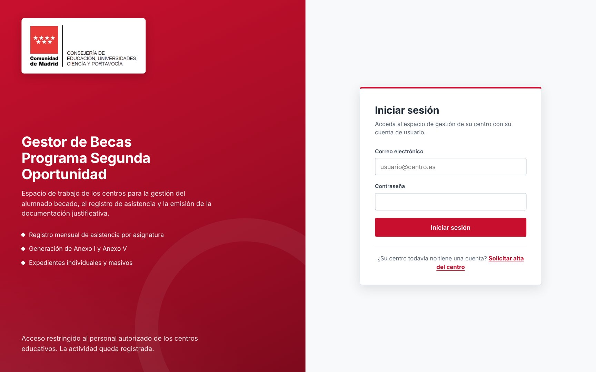
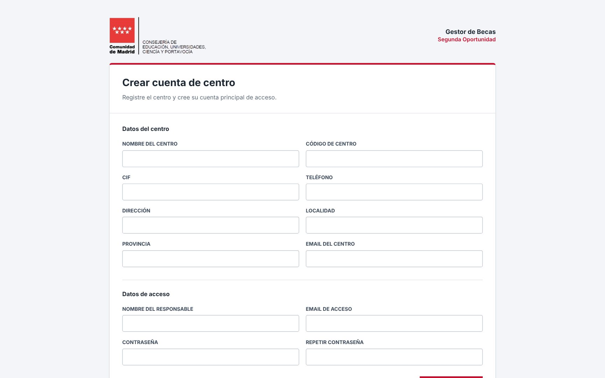
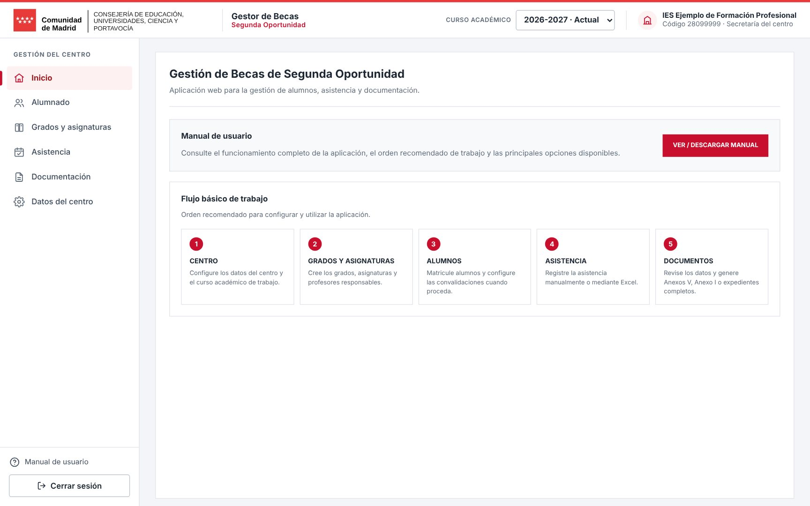
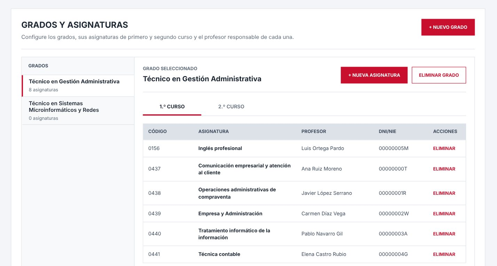
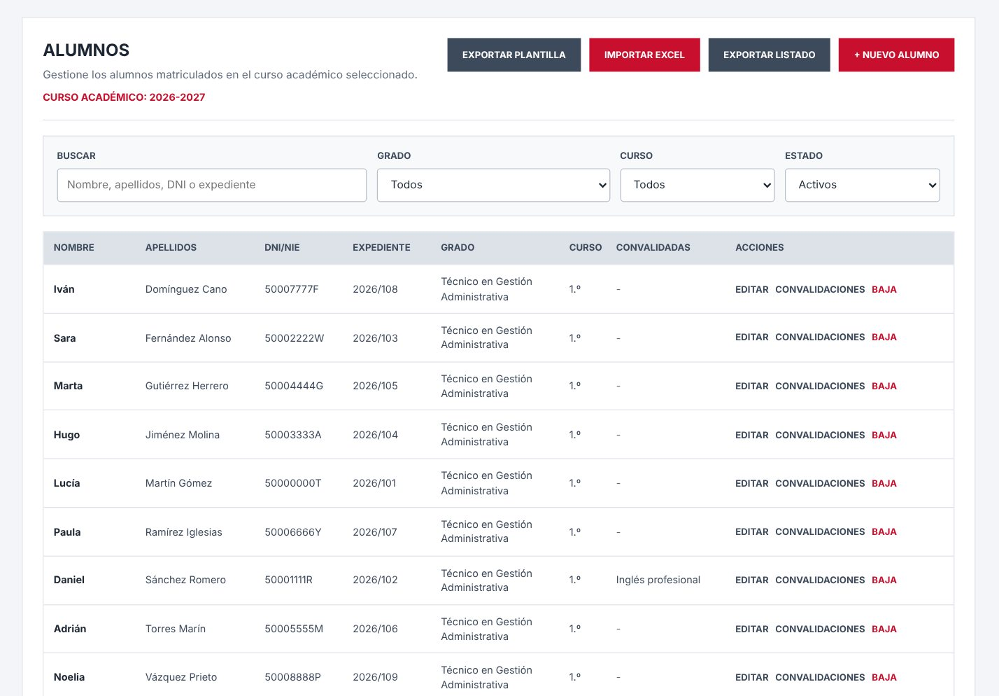
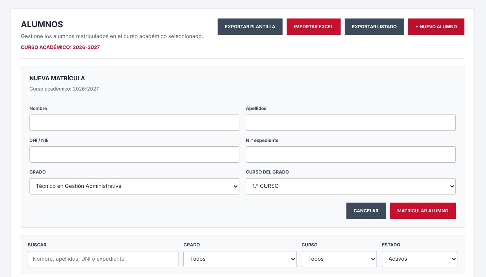
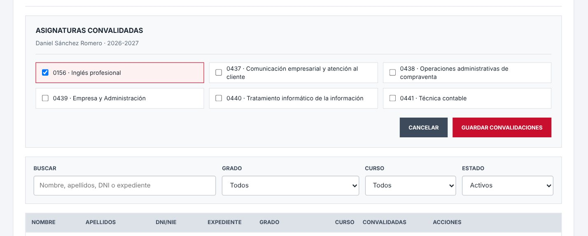
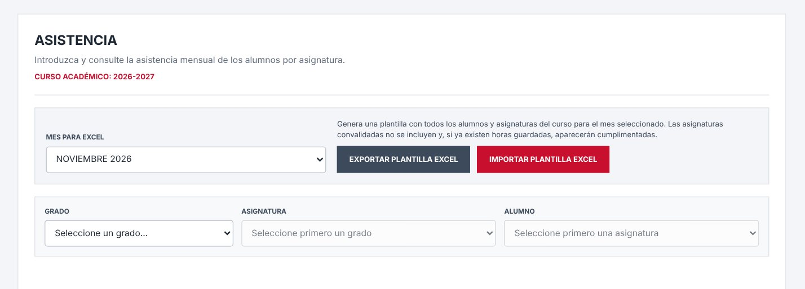
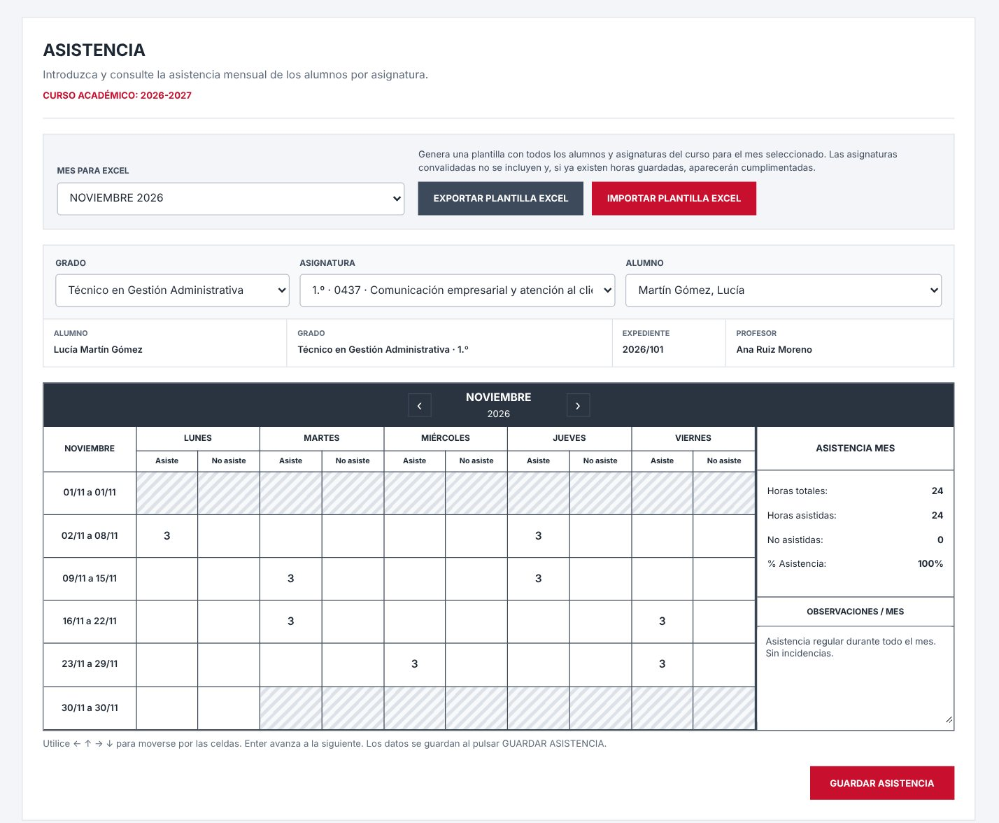

Gestor de Becas es la aplicación web con la que los centros educativos gestionan las Becas de Segunda Oportunidad. Organiza la información por curso académico y relaciona alumnado, grados, asignaturas, profesorado, asistencia y documentación.
Su objetivo es reducir tareas repetitivas, mantener la información ordenada y generar automáticamente la documentación mensual (Anexo V y Anexo I) a partir de los datos registrados.
Funciones principales
Configuración
Datos del centro, cursos académicos, grados, asignaturas y profesorado responsable.
Alumnado
Alta, edición, baja, importación y exportación Excel, y asignaturas convalidadas.
Asistencia
Registro diario por asignatura, con resumen mensual y observaciones, o de forma masiva mediante Excel.
Documentación
Anexos V, Anexo I y expedientes completos, individuales o de todo el centro en un único archivo.
Requisitos
Un navegador actualizado: Microsoft Edge, Google Chrome o Mozilla Firefox.
La dirección web facilitada por la Consejería y la cuenta de usuario del centro.
Para trabajar con plantillas: Microsoft Excel o LibreOffice Calc.
2Acceso a la aplicación

Figura 1. Pantalla de acceso.
2.1 Iniciar sesión
Abra la dirección de la aplicación en el navegador.
Escriba el correo electrónico y la contraseña de la cuenta del centro.
Pulse Iniciar sesión. Se abrirá la pantalla de Inicio.
La sesión permanece abierta durante 8 horas. Pasado ese tiempo, la aplicación vuelve a pedir las credenciales.
Protección frente a accesos indebidosTras 8 intentos fallidos de contraseña en 15 minutos, la cuenta se bloquea temporalmente y aparece el mensaje «Demasiados intentos fallidos». Espere el tiempo indicado antes de volver a intentarlo.
2.2 Alta de un centro nuevo
Si el centro todavía no tiene cuenta, pulse Solicitar alta del centro en la pantalla de acceso y complete el formulario.

Figura 2. Formulario de alta del centro.
Datos del centro: nombre, código de centro, CIF, dirección, localidad, provincia, teléfono y correo del centro.
Datos de acceso: nombre de la persona responsable, correo de acceso y contraseña (mínimo 8 caracteres), que se escribe dos veces.
El código de centro y el correo de acceso no pueden estar ya registrados.
2.3 Cerrar sesión
Pulse Cerrar sesión en la parte inferior del menú lateral. Hágalo siempre al terminar, sobre todo en equipos compartidos.
3Funcionamiento general

Figura 3. Pantalla de Inicio y estructura común de todas las pantallas.
3.1 Cabecera
Figura 4. Cabecera: identificación institucional, aplicación, curso académico y centro.
Izquierda: identificación de la Comunidad de Madrid y de la Consejería, y el nombre de la aplicación.
Curso académico: selector del curso con el que se trabaja. Los alumnos, la asistencia y los documentos que se consultan o generan dependen de este curso.
Derecha: nombre y código del centro y usuario conectado.
ImportanteAntes de introducir o consultar información, compruebe siempre el curso académico seleccionado en la cabecera.
3.2 Menú lateral
Opción
Para qué sirve
Inicio
Acceso al manual y resumen del flujo de trabajo.
Alumnado
Matrículas del curso, importación/exportación, convalidaciones y bajas.
Grados y asignaturas
Estructura académica: grados, asignaturas de 1.º y 2.º y profesorado.
Asistencia
Registro mensual de horas por alumno y asignatura, o mediante Excel.
Documentación
Generación de Anexos V, Anexo I y expedientes.
Datos del centro
Datos identificativos del centro y cursos académicos.
En la parte inferior del menú están el enlace al Manual de usuario y el botón Cerrar sesión. La opción activa aparece resaltada en rojo.
4Orden recomendado de configuración
Al configurar un centro desde cero conviene seguir este orden, porque cada paso usa información creada en el anterior:
Completar los datos del centro.
Crear el curso académico de trabajo y marcarlo como actual.
Crear los grados.
Crear las asignaturas de 1.º y 2.º curso con su profesor responsable.
Dar de alta o importar el alumnado y matricularlo en su grado y curso.
Marcar las asignaturas convalidadas de cada alumno, si las hay.
Registrar o importar la asistencia mensual.
Revisar la información y generar la documentación.
ConsejoPara centros con muchos alumnos, use la plantilla Excel de alumnado (apartado 7.3). Así el alta del curso completo se hace en minutos.
5Datos del centro y cursos académicos
Figura 5.Datos del centro: datos identificativos y cursos académicos.
5.1 Datos del centro
Aquí se guarda la información identificativa que usa la aplicación y que aparece en los documentos: nombre, código, CIF, dirección, localidad, provincia, teléfono y correo electrónico. Tras modificarla, pulse Guardar datos del centro.
5.2 Cursos académicos
Con + Nuevo curso se crea un curso académico con su nombre (por ejemplo, 2026-2027) y sus fechas de inicio y fin. Las fechas determinan los meses disponibles en Asistencia y Documentación.
Hacer actual: convierte un curso en el curso de trabajo por defecto, identificado como «Curso actual».
Desactivar / Activar: retira o recupera un curso. Siempre debe quedar un curso activo y actual.
Eliminar: solo está disponible para cursos previamente desactivados.
AdvertenciaEliminar un curso borra todos los datos asociados a él: matrículas, asistencia y convalidaciones. Lea con atención el mensaje de confirmación antes de aceptar.
6Grados y asignaturas

Figura 6.Grados y asignaturas con un grado seleccionado.
Esta pantalla define la estructura académica que se usa después para matricular alumnos, registrar asistencia y generar la documentación.
6.1 Grados
Use + Nuevo grado para crear un grado. Los grados aparecen en el panel izquierdo con su número de asignaturas. Al seleccionar uno se muestran sus asignaturas. Eliminar grado retira el grado seleccionado.
6.2 Asignaturas
Las asignaturas se organizan en las pestañas 1.º curso y 2.º curso. Con + Nueva asignatura se añade una asignatura al grado seleccionado:
Código y nombre de la asignatura o módulo. El código puede ser numérico o alfanumérico.
Profesor responsable: elija uno ya existente o cree uno nuevo con nombre, apellidos y DNI/NIE. Su nombre aparecerá en el Anexo V.
Eliminar retira la asignatura.
RecomendaciónConfigure por completo grados y asignaturas antes de matricular alumnos. Así no tendrá que corregir relaciones después.
7Alumnado

Figura 7.Alumnado: acciones, filtros y listado de matrículas.
La pantalla muestra las matrículas del curso académico seleccionado en la cabecera.
7.1 Consulta y filtros
Buscar por nombre, apellidos, DNI/NIE o expediente.
Filtrar por grado, por curso (1.º o 2.º) y por estado (activos, de baja o todos).
Cada fila ofrece las acciones Editar, Convalidaciones y Baja. En los alumnos dados de baja aparece Reactivar.
7.2 Matricular un alumno

Figura 8. Formulario de nueva matrícula.
Pulse + Nuevo alumno.
Complete nombre, apellidos, DNI/NIE y n.º de expediente.
Elija el grado y el curso del grado.
Pulse Matricular alumno.
Si el DNI/NIE ya existe en el centro de un curso anterior, la aplicación reutiliza la ficha de la persona y crea la nueva matrícula.
7.3 Importación y exportación
Botón
Función
Exportar plantilla
Descarga la plantilla Excel preparada para altas masivas, con los grados del centro.
Importar Excel
Incorpora la plantilla cumplimentada. Si hay errores, la aplicación indica la fila y el motivo, y no importa nada hasta que se corrijan.
Exportar listado
Descarga el listado de alumnos del curso en Excel.
ConsejoUse siempre la plantilla que descarga la aplicación y no cambie sus columnas. Después de importar, revise algunos alumnos al azar.
7.4 Convalidaciones

Figura 9. Selección de asignaturas convalidadas de un alumno.
La acción Convalidaciones muestra las asignaturas del grado y curso del alumno. Marque las convalidadas y pulse Guardar convalidaciones. En el listado, la columna «Convalidadas» indica cuáles tiene cada alumno.
Efecto de una convalidaciónUna asignatura convalidada no admite registro de asistencia, no aparece en la plantilla Excel de asistencia y se excluye de la documentación. La convalidación no se traslada automáticamente a la matrícula de otro curso.
7.5 Bajas
Baja desactiva la matrícula sin borrar sus datos. El alumno deja de aparecer en el filtro «Activos» y en la generación masiva. Con Reactivar se recupera.
8Asistencia
La asistencia puede registrarse de dos formas: individualmente desde la pantalla, o de forma masiva con una plantilla Excel mensual.

Figura 10.Asistencia: zona Excel (arriba) y selectores de grado, asignatura y alumno.
8.1 Selección del alumno
Seleccione el grado.
Seleccione la asignatura.
Seleccione el alumno.
Cada selector se activa al completar el anterior. Así solo pueden elegirse combinaciones que correspondan a una matrícula real. Si un alumno tiene convalidada la asignatura elegida, no aparece en la lista de alumnos de esa asignatura.
8.2 Registro manual

Figura 11. Tabla mensual de asistencia con resumen y observaciones.
La tabla organiza el mes por semanas y días laborables (lunes a viernes). Para cada día se anotan las horas Asiste y No asiste.
Las celdas rayadas son días que no pertenecen al mes mostrado.
Las flechas del encabezado cambian de mes dentro del curso académico.
El panel Asistencia mes calcula horas totales, asistidas, no asistidas y el porcentaje de asistencia.
En Observaciones / mes se anotan incidencias del mes.
Se puede navegar con el teclado: flechas ← ↑ → ↓ para moverse por las celdas, e Intro para pasar a la siguiente.
Pulse Guardar asistencia para confirmar. Mientras haya cambios pendientes, la pantalla muestra el aviso «Hay cambios sin guardar». Guarde siempre antes de cambiar de alumno, asignatura o mes.
8.3 Trabajo masivo con Excel
En Mes para Excel, elija el mes.
Pulse Exportar plantilla Excel. La hoja contiene todos los alumnos y asignaturas del curso para ese mes. Si ya hay horas guardadas, aparecen cumplimentadas.
Complete o corrija las horas en Excel, sin modificar la estructura.
Pulse Importar plantilla Excel y seleccione el archivo. Tras confirmar, la aplicación valida el archivo y sustituye la asistencia del mes de las combinaciones alumno-asignatura incluidas. Si hay cualquier error, no se guarda ningún cambio y se indica qué corregir.
ConsejoRegistre la asistencia de forma continua (diaria o semanal) en lugar de dejarla para el final de mes. Es más fiable y evita esperas en los días de mayor uso.
9Documentación
Documentación genera los documentos mensuales a partir de los datos del alumno y de la asistencia registrada.
Figura 12.Documentación con el resumen del mes desplegado y las opciones de generación.
9.1 Selección y resumen
Elija el alumno y el mes con las flechas. Se muestran los datos básicos del alumno. El apartado Resumen del mes se despliega pulsando sobre él y muestra, por asignatura, las horas totales y las asistidas, con el porcentaje global.
Antes de generarDespliegue el resumen del mes y compruebe que las horas son correctas. Los documentos reflejan exactamente lo registrado.
9.2 Opciones de generación
Opción
Resultado
Todos los Anexos V
Un Anexo V por cada asignatura del alumno, con la asistencia desde el inicio del curso hasta el mes seleccionado. Se descarga en un archivo ZIP.
Anexo V individual
El Anexo V de la asignatura elegida en el desplegable (PDF).
Anexo I
El Anexo I del alumno para el mes seleccionado (PDF).
Expediente completo
Los Anexos V y el Anexo I del alumno en un único ZIP.
Generación masiva del centro
Los expedientes de todos los alumnos activos del curso para el mes elegido, en un ZIP con una carpeta por alumno.
Las asignaturas convalidadas se excluyen de la documentación.
Generación masivaSegún el número de alumnos, puede tardar entre unos segundos y un par de minutos. No cierre ni recargue la página mientras se genera. Hágala una sola vez al final, con todo revisado y, si es posible, fuera de las horas de mayor uso (antes de las 10:00 o después de las 14:00).
10Flujo mensual recomendado
Con el centro configurado y el alumnado matriculado, el trabajo de cada mes se resume así:
Comprobar el curso académico seleccionado.
Registrar la asistencia a lo largo del mes, o exportar la plantilla Excel del mes.
Si se trabaja con Excel, completar la plantilla e importarla.
Revisar los datos y porcentajes de asistencia.
En Documentación, comprobar el resumen del mes de cada alumno.
Corregir cualquier incidencia antes de generar documentos.
Generar los Anexos V, Anexo I, expedientes o la generación masiva del centro.
Conservar los documentos generados según el procedimiento interno del centro.
Calendario de cierre
La aplicación la usan simultáneamente todos los centros. Si la Consejería establece un calendario escalonado de cierre mensual por zonas, respete el día asignado a su centro para la generación masiva. Así la espera es mínima para todos.
11Casos especiales
11.1 Asignaturas convalidadas
Se gestionan desde Alumnado (apartado 7.4). Quedan excluidas de la asistencia y de la documentación de esa asignatura.
11.2 Cambio de curso académico
El selector de la cabecera cambia el curso de trabajo. Al hacerlo, todas las pantallas pasan a mostrar los datos del curso elegido.
11.3 Cursos históricos
Los cursos que ya no se usan pueden desactivarse. La eliminación completa solo es posible con el curso desactivado y tras confirmar el aviso.
11.4 Alumnos dados de baja
El filtro Estado de Alumnado distingue matrículas activas y bajas. Las bajas no se incluyen en la generación masiva.
11.5 Alumnos con muchas asignaturas o meses
Si el contenido supera la capacidad de una página del modelo oficial, el documento continúa en una segunda página. Ocurre en el Anexo I con muchas asignaturas y en el Anexo V a partir del sexto mes del curso.
12Buenas prácticas
Compruebe el curso académico seleccionado antes de empezar cualquier tarea.
Configure grados y asignaturas antes de matricular alumnos.
Revise las convalidaciones antes de introducir asistencia.
Use las plantillas Excel generadas por la aplicación y no altere su estructura.
Tras una importación masiva, revise una muestra de alumnos.
Guarde la asistencia antes de cambiar de alumno, asignatura o mes.
Registre la asistencia de forma continua, no solo a final de mes.
Revise el resumen mensual antes de generar los Anexos.
Haga la generación masiva una sola vez y fuera de las horas de mayor uso.
Extreme la precaución al eliminar cursos o información histórica.
Mantenga actualizados los datos del centro y cierre la sesión al terminar.
13Resolución de incidencias
Situación
Qué hacer
«Email o contraseña incorrectos»
Revise el correo y la contraseña (atención a mayúsculas). Si no la recuerda, contacte con el soporte de la aplicación.
«Demasiados intentos fallidos»
La cuenta está bloqueada temporalmente. Espere 15 minutos.
La aplicación vuelve a pedir la contraseña
La sesión caduca a las 8 horas. Inicie sesión de nuevo.
No aparecen alumnos, asistencia o documentos
Compruebe el curso académico de la cabecera y los filtros de Alumnado.
Un alumno no aparece en Asistencia para una asignatura
Probablemente la tiene convalidada. Revíselo en Alumnado → Convalidaciones.
Error al importar un Excel
Lea el mensaje: indica la fila y el motivo. Corrija el archivo y vuelva a importarlo. Use siempre la plantilla exportada por la aplicación.
El documento muestra horas inesperadas
Revise el resumen del mes en Documentación y corrija la asistencia del mes o asignatura correspondiente.
La generación masiva tarda
Es normal en centros con muchos alumnos. No recargue la página. Si coincide con un pico de uso, inténtelo fuera de las horas de mayor actividad.
14Novedades de la versión 1.1
Interfaz
Nuevo diseño institucional de la Comunidad de Madrid, con mayor tamaño de letra y mejor contraste (accesibilidad AA).
Menú lateral con iconos y nombres actualizados: Alumnado, Documentación y Datos del centro.
La cabecera muestra el código del centro y el usuario conectado.
Nueva pantalla de acceso y acceso directo al manual desde el menú.
Corregidas columnas recortadas en Alumnado y en el resumen de Asistencia.
Rendimiento y seguridad
La generación masiva de expedientes es aproximadamente el doble de rápida.
La aplicación está preparada para el uso simultáneo de todos los centros sin esperas excesivas.
Bloqueo temporal tras varios intentos fallidos de contraseña.
Los documentos generados (Anexo I y Anexo V) mantienen exactamente el mismo formato y contenido que en la versión 1.0.